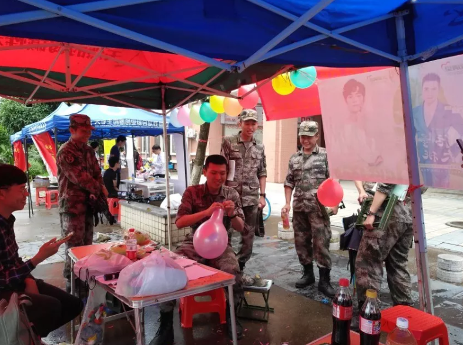
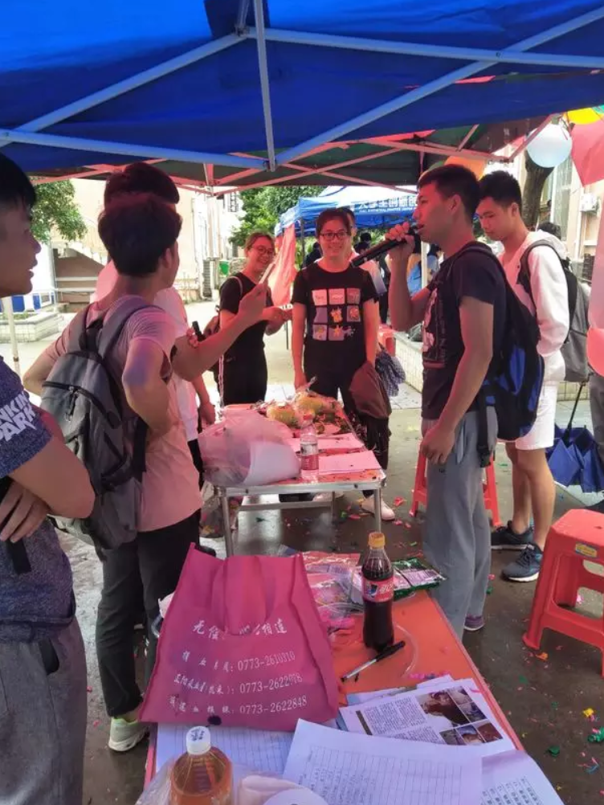
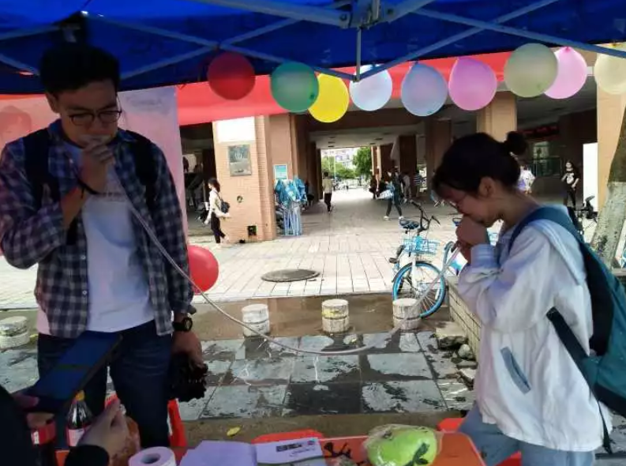

大爱清尘·肺活量大挑战
桂电志愿者网 日期：2015-08-02 来源： 桂电青协
2018年5月7日，桂林电子科技大学青年志愿者协会于花江校区中央食堂开展了“大爱清尘百城百校‘肺活量大挑战’”活动。该活动旨在让人们了解尘肺病的相关危害，引起人们的重视，志愿者们通过参加“肺活量大挑战”活动进而关注尘肺病农民这一群体。
活动当天，清清爽爽的雨，淡淡凉凉的风，在不断点缀着周围环境，但抱着对活动的兴趣，陆陆续续也有同学前来参与其中，他们了解尘肺病的知识，并加入肺活量挑战。




在此希望通过活动游戏的方式让更多的社会人士关注尘肺病，虽然活动已经结束，但公益的脚步不曾停歇，请关爱我们身边的尘肺病患者，即使生活充满阴霾，也要笑对每一天，期待从更多尘肺病人脸上看到笑容。
【责任编辑：桂电青协】